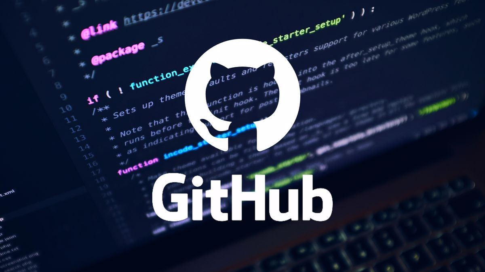
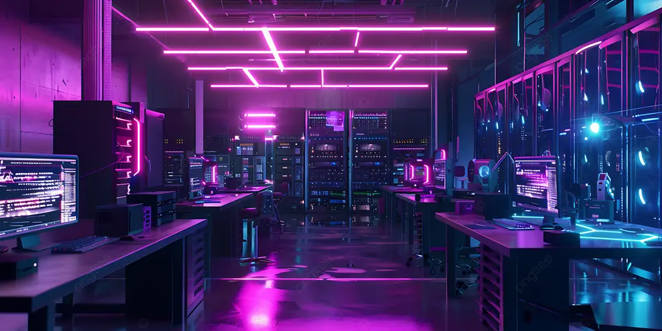

Control de Versiones
Gestión avanzada de repositorios en la nube para proteger, auditar y distribuir el código fuente de tu videojuego de forma colaborativa.
Ver guía de GitHub →Consola de recursos y documentación técnica para desarrolladores de software UTM
Bienvenido a la plataforma centralizada de infraestructura interactiva. Aquí aprenderás a configurar arquitecturas de red estables, gestionar bases de datos estructuradas de jugadores y optimizar el rendimiento de entornos multijugador independientes.

Gestión avanzada de repositorios en la nube para proteger, auditar y distribuir el código fuente de tu videojuego de forma colaborativa.
Ver guía de GitHub →Ecosistemas de desarrollo independientes libres de licencias comerciales y plataformas directas de distribución digital.
Ver guía de Motores →
Configuración de ambientes locales de bases de datos persistentes para el almacenamiento de perfiles e inventarios de usuarios.
Ver guía de Base de Datos →Para pruebas de concepto iniciales puedes optar por contenedores virtuales elásticos gratuitos como Skynode, pero para arquitecturas estables con usuarios recurrentes en producción se recomienda utilizar servidores dedicados con paneles avanzados como Searcade.
Las distribuciones empresariales como Fedora o Linux Mint ofrecen un consumo mínimo de recursos de hardware de cómputo, una estabilidad del núcleo superior y un control avanzado por comandos para levantar servicios SQL eficientemente.
Es un estándar mandatorio configurar llaves criptográficas SSH (públicas y privadas) eliminando las contraseñas planas de la terminal, además de restringir los softwares de control visual de escritorio genéricos en redes públicas.